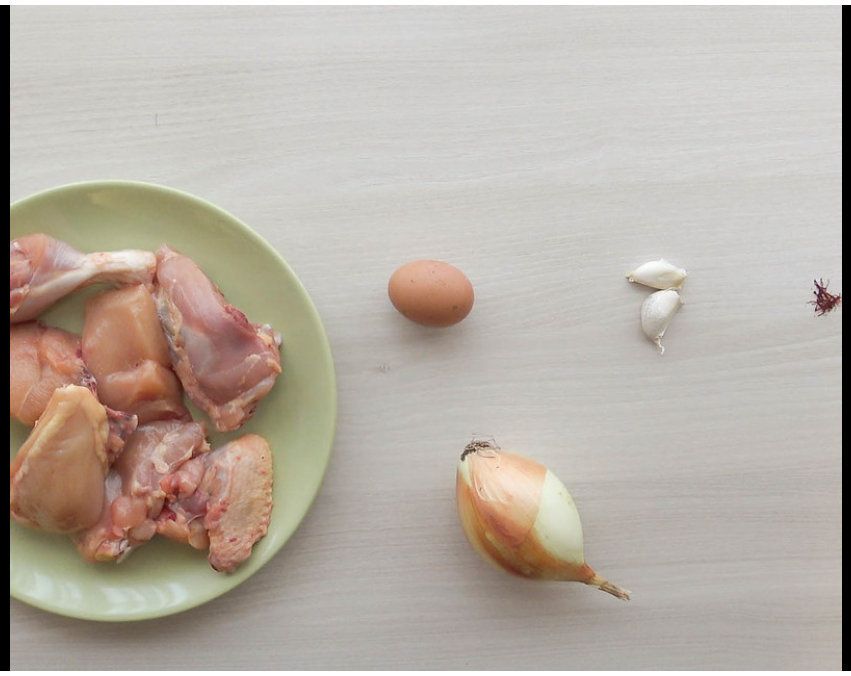

Pollo en Pepitoria
Troceamos el pollo en casa o bien le pedimos al carnicero que nos lo trocee cuando lo compremos. Limpiamos bien las piezas de restos de grasas y les retiramos la piel (salvo a las alitas). En realidad eliminar la piel es opcional, pero considero que añade al plato un exceso de grasa innecesaria. Salpimentamos los trozos ligeramente.
Doramos el pollo en una cazuela con abundante aceite de oliva bien caliente, girando los trozos de vez en cuando para que se hagan por todas partes. Los retiramos de la cazuela y reservamos.
Mientras se dora el pollo vamos troceado la cebolla y pelamos los ajos. Podemos utilizar ajos enteros, simplemente aplastándolos un poco para que desprendan mejor todo su sabor, o añadirlos a la cazuela troceados.
Si los añadimos enteros serán más fáciles de localizar y retirar si hubiera alguien que prefiriera no encontrarlos. Retiramos el exceso de aceite de la cazuela donde hemos dorado el pollo si es necesario, dejando el equivalente a 3-4 cucharadas.
Echamos la cebolla troceada y los ajos y lo sofreímos todo durante 10-15 minutos, hasta que estén blanditos. Con la ayuda de una cuchara de madera, vamos rascando del fondo los restos que se habrán quedado pegados dorar el pollo. Incorporamos así toda esa esencia caramelizada al guiso.
Majado para acompañar el pollo
Para preparar el majado tostamos las almendras en una sartén pequeña controlando siempre la temperatura para que no se quemen.
Cocemos los huevos durante 15 minutos y reservamos las yemas.
Tostamos ligeramente las hebras de azafrán durante unos minutos. También podéis infusionarlas con un poco de agua caliente. Reservamos.
En una sartén pequeña ponemos 2 cucharadas del aceite que hemos empleado para dorar el pollo y añadimos el pan cortado en trocitos pequeños. Freímos el pan hasta que quede tostadito, procurando que no se queme. Reservamos.
En un mortero ponemos el pan tostado, las yemas cocidas, las almendras tostadas y las hebras de azafrán. Machacamos todo hasta que quede una pasta.
Cocción y presentación final
Con la cebolla y el ajo ya listos, añadimos el pollo, el majado que tenemos preparado y el vaso de vino. Cocinamos unos minutos hasta que el vino reduzca y añadimos el caldo de pollo o agua.
Dejamos cocer durante 35-40 minutos dependiendo del tipo de pollo. Recordad que esta receta la podéis preparar con pollo de corral o con gallina. Aunque será más tiempo de cocción, pues su carne es más dura. Id probando hasta que veáis que la carne del pollo está tierna.
Opcionalmente, si queréis aprovechar las claras de los huevos cocidos, podemos picarlas finalmente y añadirlas por encima del pollo a la hora de servir.
